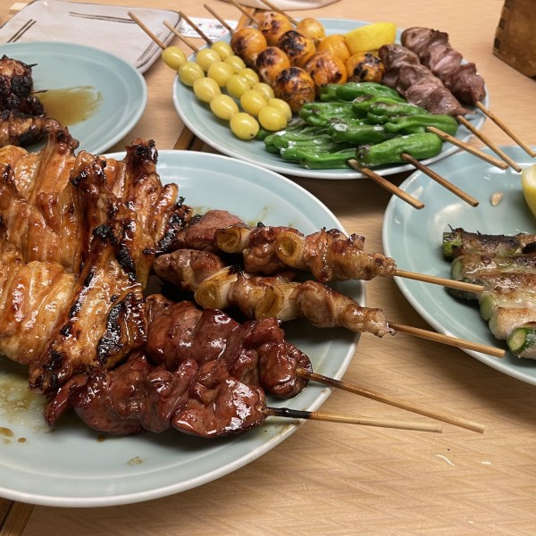
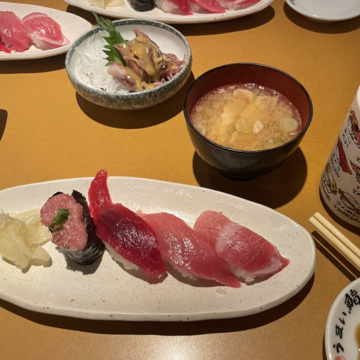
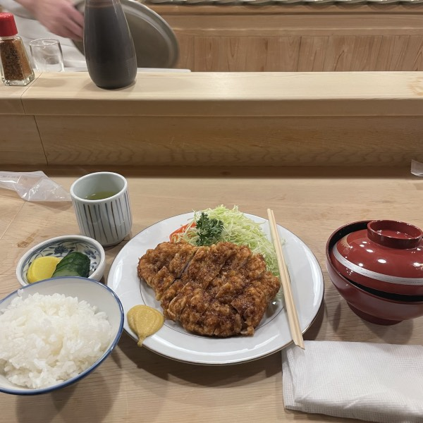

焼き鳥

焼き鳥が大好きです、その中で皮が一番好きです。中国にいる時こういう味付け食べたことないので、日本で初めて食べた時にはもう焼き鳥と恋に落ちました。
この写真は銀座にあるお店「鳥ぎん
」で撮りました。友人の説明で、案内する人も20年前にと同じ人で、すごいなと思いました。写真に載せてないが、炊き込みご飯も絶品でした。旬に合わせて出したかにの炊き込みご飯も美味しくいただきました。
お寿司

生の物がそもそも嫌いなので、お寿司もそんなに好きじゃなかったです。日本に来てから納豆、卵かけご飯も挑戦した上で、お寿司にも突入しました。（？順番がちょっと変な気がする）
友人と一緒に赤坂にあるお寿司屋さん「うまい鮨勘」に行って、大トロと中とろがすすめられました。半信半疑で口につけたら、、なにこれ！！美味しすぎる！！！ワサビとの相性がよすぎる問題になっています！
そして、私もまたワサビとお寿司のコンビと二度目の恋に落ちました。
とんかつ

毎日通るとんかつ屋さん「とんかつ とんき」で食べたとんかつです。ずっと気になって友人に聞いたら、なんと、百年近くやってきた評判がいいお店です。メニューもすごく簡単で、ひれとロースが選べられます。
店内は穏やかな雰囲気で、スタッフたちの作業ゾーンのすぐそばにある席に案内されました。ひれのを注文して、先に味噌汁（肉がたくさん入って豚汁である可能性も？）が出されました。目の前に揚げてる姿を見えて、ワクワクしながら主人公のとんかつがようやく登場しました。脂がたくさんなのに口にしたら全然脂っこく感じない、黄色のワサビみたいな？ものにつけたら美味しさも倍になって、並ぶ必要ないならいつかもう一回食べてみたい！